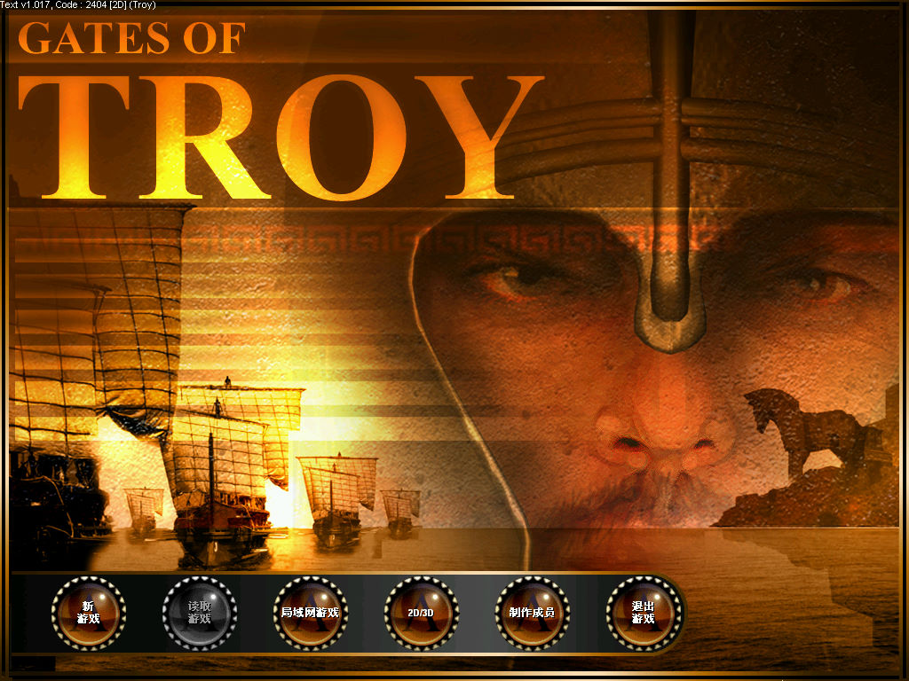
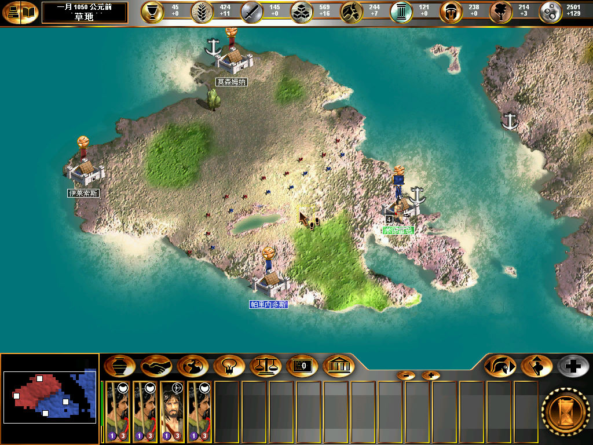

名稱：斯巴達人／斯巴達人：特洛伊之門／斯巴達人之特洛伊之門 (Spartan: Gates of Troy，簡中／英文版)
簡介：Slitherine 2004年出品的回合策略遊戲，由Just Play代理發行，大陸由娛樂通簡中
化並代理發行 [待補]。


保護：英文舊版（Spartan.exe）為光碟SafeDisc 2.80，英文新版為光碟（TROY.exe）
簡中版（Spartan.exe）為光碟StarForce 3.03（序號：8R4HCX-5MQYR4-2CL3KD-TJYF2N）
英文新版破解碼：
TROY.exe
F8 05 75 3A
-- -- 90 90
25 63 3A 5C 5F 5F 6B 70 39 39 31 00
5F 5F 6B 70 39 39 31 00 00 00 00 --
需拷貝光碟的__kp991到安裝目錄裡。
備註：簡中版為1.009版，英文新版為1.017版。
備註：第一次執行後若當機，再次執行即可。
備註：進入遊戲後若花屏，請將螢幕顯示設定為65536色（16位元）。
檔案：nocd_chs.rar = 簡中免光碟檔